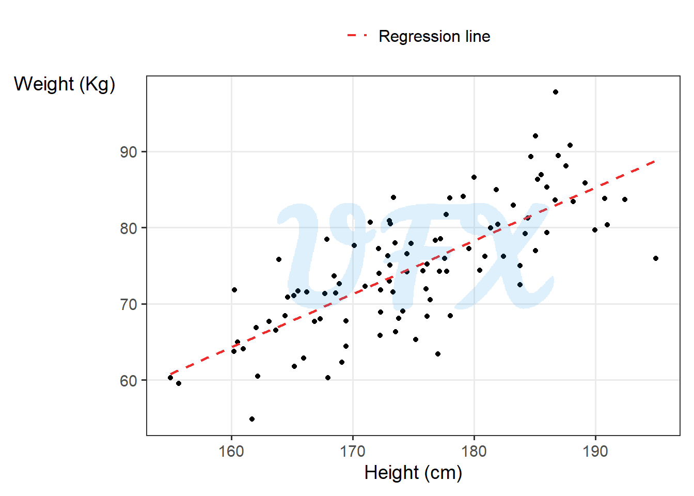
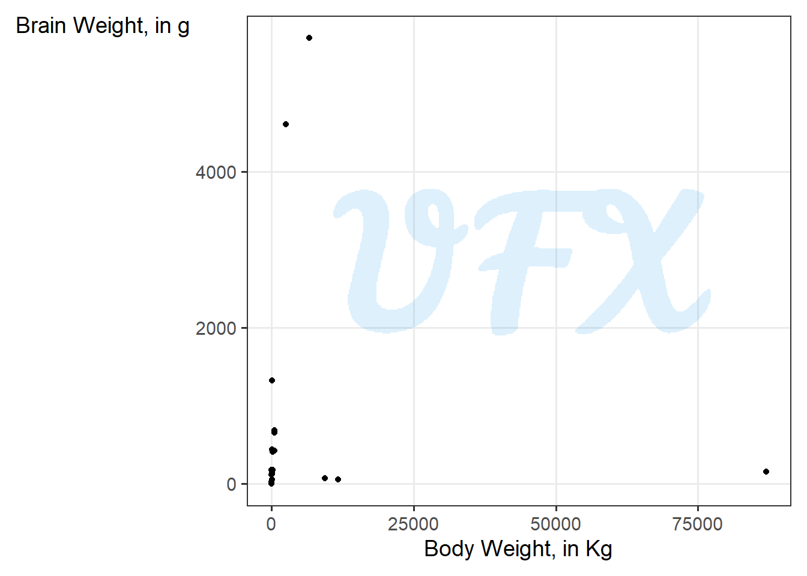
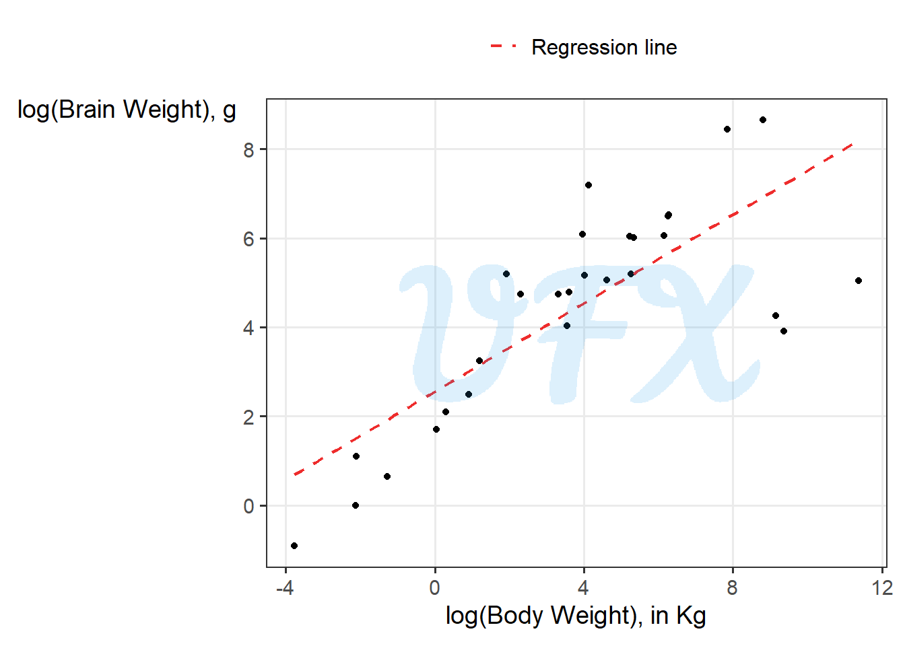

In this post, we will see how logs aren’t just for lumberjacks, but also for models.
Linear-Linear
A linear model (LM) is given by:
\[ Y_i = \beta_0 + \beta_1x_1 + ...+\beta_nx_n + \varepsilon_i, \tag{1}\]
where:
\(Y_i\) is the response variable;
\(\beta_0\) is the intercept;
\(x_1\) is one explanatory variable;
\(\beta_1\) is the slope coefficient of the explanatory variable \(x_1\) ;
\(x_n\) is one explanatory variable;
\(\beta_n\) is the slope coefficient of the explanatory variable \(x_n\) ;
\(\varepsilon_i\) is the error term
To understand how the model behavior let’s see in a simple regression model
\[ Y_i = \beta_0 + \beta_1x_1 + \varepsilon_i. \tag{2}\]
A 1 unit increase in \(x_1\) impact in \(Y_i\) is:
\[ \begin{align} \beta_1(x_1+1) - \beta_1x_1 & = \beta_1x_1+\beta_1 - \beta_1x_1 \\ & = \beta_1. \end{align} \tag{3}\]
Example
So, for example, if we adjust a linear model of human weight and height, first let’s see how they behave.
Because we see a linear relationship between the variables, a linear model is not absurd; after adjusting a linear model, we get:
\[ \mathrm{weight} = -47.6283 + 0.6995*\mathrm{height}, \tag{4}\]
That is, for every centimeter a person grows taller, they are estimated to be 0.6995 kg heavier. As a result, a one-unit increase in height results in a 0.6995-unit increase in weight.
However, there are times when the relationship between our variables is not linear or additive. Given its properties, the logarithmic scale can be very useful, for more details check my post An intro to: Logarithmic Scale.
Log-Linear
A log-linear model implies that we apply the log to the response variable (\(Y_i\)),
\[ \log{(Y_i)} = \beta_0 + \beta_1x_1 + ...+\beta_nx_n + \varepsilon_i, \tag{5}\]
To understand how the model behavior let’s see in a simple regression model
\[ \log{(Y_i)} = \beta_0 + \beta_1x_1 + \varepsilon_i, \tag{6}\]
To see how a 1 unit increase in \(x_1\) implies in \(Y_i\), we have to exponentiate it
\[ \begin{align} Y_i & = e^{\log{(Y_i)}} \\ & = e^{\beta_0 + \beta_1x_1 + \varepsilon_i}\\ & = e^{\beta_0}e^{\beta_1x_1}e^{\varepsilon_i}. \end{align} \tag{7}\]
A 1 unit increase in \(x_1\) impact in \(Y_i\) is:
\[ \begin{align} \varepsilon^{\beta_1(x_1+1)} - \varepsilon^{\beta_1x_1} & = \varepsilon^{\beta_1x_1+\beta_1} - \varepsilon^{\beta_1x_1} \\ & = \varepsilon^{\beta_1x_1+\beta_1-\beta_1x_1} \\ & = \varepsilon^{\beta_1}. \end{align} \tag{8}\]
For small values we have that
\[ \varepsilon^\beta \approx 1 + \beta. \tag{9}\]
Using the approximation of Equation 9 in Equation 8 we can say that for a positive coefficient \(\beta_1\), a one-unit increase in \(x_1\) is associated with an approximate increase in \(Y_i\) of
\[ \begin{align} [100*(e^{\beta_1}-1)]\% & \approx [100*(1+ \beta_1-1)]\% \\ & \approx (100*\beta_1)\%. \end{align} \tag{10}\]
For a negative coefficient \(\beta_1\), a one-unit increase is associated with an approximate decrease in \(Y_i\) of
\[ \begin{align} [100*(1-e^{\beta_1})]\% & \approx [100*(1- 1 - \beta_1)]\% \\ & \approx -(100*\beta_1)\%. \end{align} \tag{11}\]
Linear-log
A linear-log model implies that we apply the log to one or more explanatory variables (\(x_i\)),
\[ Y_i = \beta_0 + \beta_1\log{(x_1)} + ...+\beta_n\log{(x_n)} + \varepsilon_i, \tag{12}\]
To understand how the model behavior let’s see in a simple regression model
\[ Y_i = \beta_0 + \beta_1\log{(x_1)} + \varepsilon_i, \tag{13}\]
Let’s see how a 1 unit change in the log of \(x_1\), considering \(x_2 = x_1+1\),
\[
\begin{align}
\log{(x_2)} - \log{(x_1)}
& = \log{\left(\frac{x_2}{x_1}\right)}. \\
\end{align}
\tag{14}\]
To see how the percent change is a linear approximation of the log difference, consider two values, \(a\) and \(b\), where the percent change is given by:
\[ \frac{b-a}{a}. \tag{15}\]
Considering the first order of the Taylor expansion of \(\log{(z)}\) around \(z=1\) we have that
\[ \log{(z)} \approx z - 1. \tag{16}\]
Assuming that \(\frac{b}{a} \approx 1\), we can apply the concept of Equation 16 to Equation 14
\[ \begin{align} \log{\left(\frac{x_2}{x_1}\right)} & \approx \frac{x_2}{x_1} - 1 \\ & \approx \frac{x_2-x_1}{x_1} \\ & \approx \frac{(x_1+1)-x_1}{x_1}. \\ \end{align} \tag{17}\]
Applying the Equation 15 in the Equation 17, that is the equivalent to a 1 percent change, so for every 1% increase in \(x_1\), \(Y_i\) increases by about \(\beta_1/100\).
Log-log
A linear-log model implies that we apply the log to both response (\(Y_i\)) and explanatory (\(x_i\)),
\[ \log{(Y_i)} = \beta_0 + \beta_1\log{(x_1)} + ...+\beta_n\log{(x_n)} + \varepsilon_i, \tag{18}\]
To understand how the model behavior let’s see in a simple regression model
\[ \log{(Y_i)} = \beta_0 + \beta_1\log{(x_1)} + \varepsilon_i, \tag{19}\]
Since the log is applied to \(x_1\) we can apply the same logic of Equation 17 and Equation 10, for every 1% increase in \(x_1\), \(Y_i\) increases by \(\beta_1\%\).
Example
To understand in an example, we will use a dataset (Seheult et al. 1989) with the average brain and body weights for 28 species of land animals.
First, we will do a scatter plot of the two variables.

The relationship between the two variables is difficult to discern, as shown in the figure above, because some of the animals are outliers in terms of brain and body weight. As a result, we can “compress” this difference using the logarithm.

After applying the logarithm, we can see in the log-log scale that the relationship between the animals’ body and brain weight is linear. As a result, we will model them using a linear model, and for the sake of the example, we will use the brain as the response variable.
\[ \log{(\mathrm{brain})} = 2.555 + 0.496*\log{(\mathrm{body})}. \tag{20}\]
So for every 1% increase in body weight, the brain weight increases by 0.496%.
Considerations
To summarize we can we how the interpretation change for change scale
| Scale | Example | Interpretation |
|---|---|---|
| Linear-linear | \(Y_i = \beta_0 + \beta_1x_1 + \varepsilon_i\) | A 1 unit increase in \(x_1\) implies in a \(\beta_1\) increase in \(Y_i\). |
| Log-Linear | \(\log{(Y_i)} = \beta_0 + \beta_1x_1 + \varepsilon_i\) | A 1 percent increase in \(x_1\) implies in a \(\beta_1/100\) approximate increase in \(Y_i\). |
| Linear-log | \(Y_i = \beta_0 + \beta_1\log{(x_1)} + \varepsilon_i\) | A 1 unit increase in \(x_1\) implies in a \((100*\beta_1)\%\) approximate increase in \(Y_i\). |
| Log-log | \(\log{(Y_i)} = \beta_0 + \beta_1\log{(x_1)} + \varepsilon_i\) | A 1 percent increase in \(x_1\) implies in a \(\beta_1\%\) approximate increase in \(Y_i\). |
References
Seheult, A. H., P. J. Green, P. J. Rousseeuw, and A. M. Leroy. 1989. “Robust Regression and Outlier Detection.” Journal of the Royal Statistical Society. Series A (Statistics in Society) 152 (1): 133. https://doi.org/10.2307/2982847.